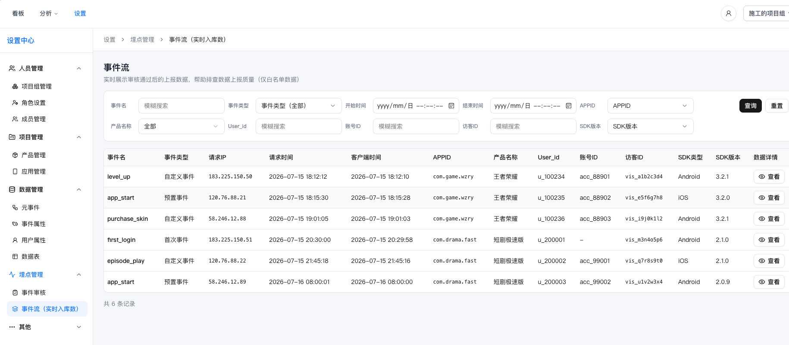

项目一 / 实时计算
实时计算：开发阶段的基础验证
在测试数据上写过几条基础 Flink SQL；实时计算链路没有上线
在线人数
基础实时统计
等级分布
按玩家等级聚合
装备分布
按装备等级聚合
测试阶段的事件流记录
可核对上报事件、请求时间与客户端时间

实际范围测试阶段的基础 SQL 验证；复杂实时场景、链路可靠性和生产运行能力未验证。
项目一 / 实时计算
在测试数据上写过几条基础 Flink SQL；实时计算链路没有上线
基础实时统计
按玩家等级聚合
按装备等级聚合
可核对上报事件、请求时间与客户端时间
